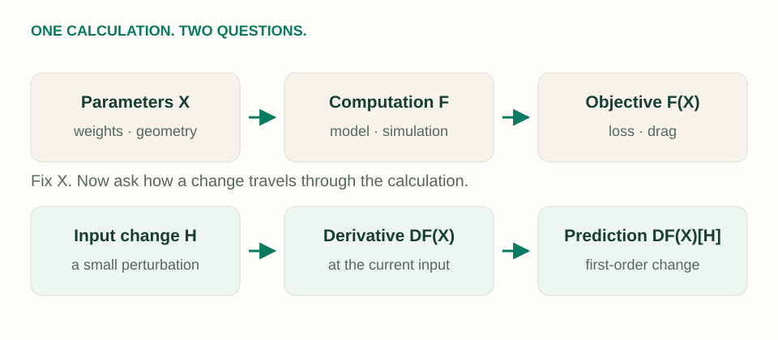
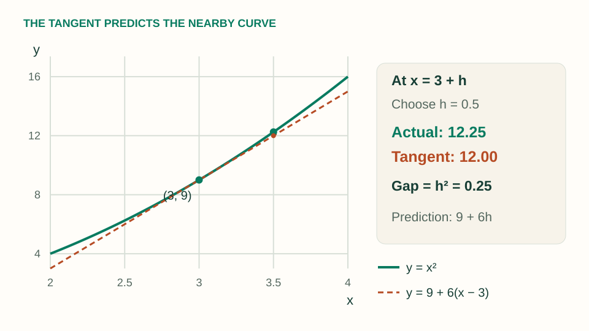
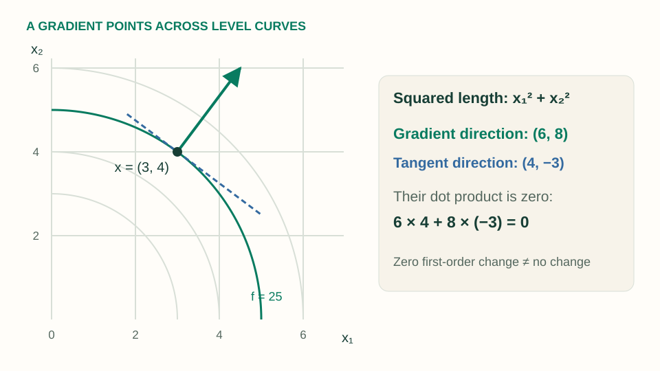
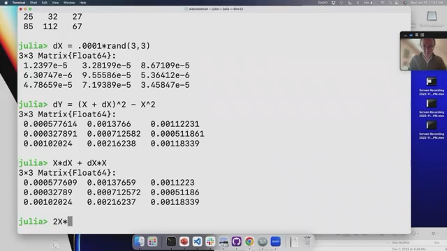
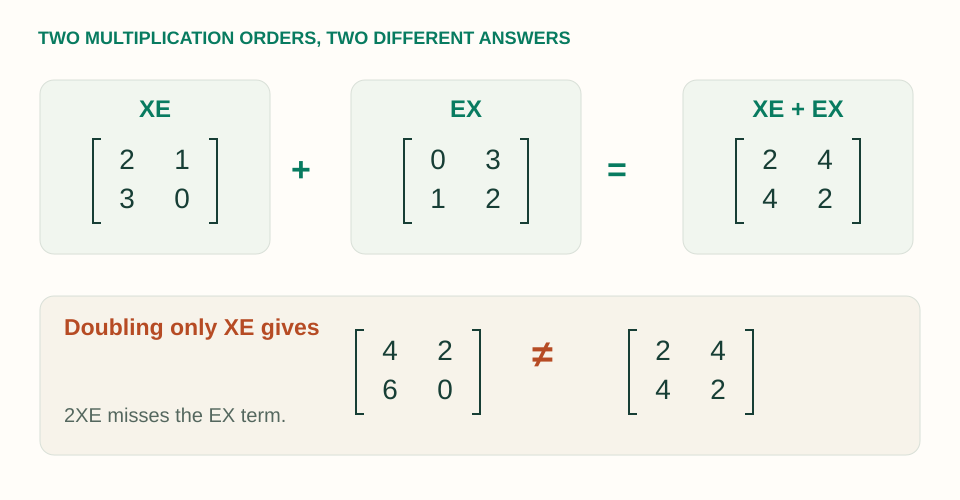
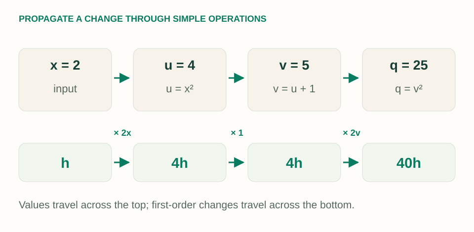

MIT 18.S096 · Lecture 01 / Part 1
Introduction and Motivation: Think in Small Changes
You already know that the derivative of $x^2$ is $2x$. Now replace the number $x$ with a square matrix $X$. What should the derivative mean—and why does simply writing $2X$ miss something?
Fix the current input. A derivative is a linear rule that turns an input perturbation into a predicted output change. The rule survives the move from numbers to matrices; the shapes and multiplication order need more care.
Companion to Lecture 1, Part 1: Introduction and Motivation, taught by Alan Edelman with contributions from Steven G. Johnson, MIT IAP 2023. The recording is about 57 minutes. These notes follow that video, including its product-rule examples and closing Hessian preview. The small matrix lab, extra derivations, figures, and exercises are explanatory additions. Sources and attribution ↓
A route through the lecture
| Video | Question to answer |
|---|---|
| 03:04 | Why extend calculus beyond scalars and vectors? |
| 10:42 | What kind of differentiation does a computer do? |
| 15:15 | How does a derivative predict a small change? |
| 28:33 | What shape should a derivative have? |
| 38:58 | What happens when we square a perturbed matrix? |
| 47:31 | Which familiar product rules still work? |
| 54:48 | How is a Hessian different from a Jacobian? |
1. Why matrix calculus exists
Calculus measures sensitivity: if we change the input, how does the result respond? Linear algebra gives us the objects used to express many modern calculations. Combining the two lets us ask the same sensitivity question about a weight matrix, a simulation, or a statistical model.
For a neural network, the input to this sensitivity calculation might be millions of parameters and the output might be one loss. For an engineering simulation, the inputs might describe a wing and the output might measure drag. Derivatives make it possible to improve those inputs systematically. The lecture uses machine learning, physical design, and statistics to motivate this broader view.
{kind=link}

Flattening a matrix into a long list of entries is possible. But keeping its matrix structure often reveals a short derivative rule and saves us from constructing a huge array of partial derivatives.
2. Start with the tangent line you already know
Take $f(x)=x^2$ at $x=3$. The current output is $9$, and the derivative is $f'(3)=6$. If the input moves by $h$, expand the actual change:
The term $6h$ scales linearly with the step; $h^2$ shrinks faster. The derivative keeps the first term. At this fixed input, the derivative is the rule “multiply the input change by six.”
The reason we can drop $h^2$ in a first-order prediction is its relative size: $h^2/|h|=|h|\to0$. The omitted part becomes negligible compared with the input step as that step shrinks.
{kind=link}

| Step $h$ | Actual change | Prediction $6h$ | Error $h^2$ |
|---|---|---|---|
| 0.1 | 0.61 | 0.6 | 0.01 |
| 0.01 | 0.0601 | 0.06 | 0.0001 |
| 0.001 | 0.006001 | 0.006 | 0.000001 |
For a finite step, write $\Delta f=f(x+h)-f(x)$. The differential $df=Df(x)[h]$ is the linear prediction. Usually $\Delta f\ne df$; they agree to first order as the step shrinks. We use brackets to mean “apply this linear rule to $h$.”
This is why the course prefers $df=f'(x)\,dx$ to thinking of a derivative as literal division. A matrix or vector perturbation cannot generally be moved into a denominator. Applying a linear rule to a perturbation works in all these settings.
One useful precision: the tangent approximation to the output includes the offset $f(x)$. The derivative itself acts on changes and is linear in the perturbation. It can still depend nonlinearly on the point $x$ where we evaluate it.
3. Before calculating, ask what goes in and what comes out
The derivative accepts a perturbation with the same shape as the input and returns a first-order change with the same shape as the output. That single requirement explains most of the notation.
| Function | Derivative acting on a change | Representation |
|---|---|---|
| $f:\mathbb R\to\mathbb R$ | $df=f'(x)h$ | One slope |
| $r:\mathbb R\to\mathbb R^m$ | $dr=r'(t)h$ | A velocity vector |
| $f:\mathbb R^n\to\mathbb R$ | $df=\nabla f(x)^T h$ | A row acting on $h$; the gradient is a column |
| $F:\mathbb R^n\to\mathbb R^m$ | $dF=J_F(x)h$ | An $m\times n$ Jacobian |
| $f:\mathbb R^{p\times q}\to\mathbb R$ | $df=\operatorname{tr}(G^T H)$ | A $p\times q$ gradient $G$ paired with $H$ |
| $F:\mathbb R^{n\times n}\to\mathbb R^{n\times n}$ | $dF=DF(X)[H]$ | A linear map from matrices to matrices |
Here $\operatorname{tr}$ means “add the diagonal entries.” The expression $\operatorname{tr}(G^T H)=\sum_{i,j}G_{ij}H_{ij}$ is the matrix version of a dot product. Each $G_{ij}$ measures sensitivity to changing one input entry while holding the others fixed. This explains why a scalar loss can have a matrix-shaped gradient.
A gradient and a derivative: the same information, two roles
Suppose $f$ takes a vector $x$ and returns one number. There are several ways to move away from $x$, so one slope is no longer enough. The gradient collects the slope along each input coordinate into a column vector. Each entry tells us how sensitive $f$ is to that coordinate, with the other coordinates held fixed.
The derivative is the linear rule that combines these sensitivities for a particular move $h$. Multiply each coordinate's sensitivity by its change, then add the contributions. That is exactly a dot product:
Why the transpose? We chose to represent inputs and gradients as columns. To turn an $n\times1$ change into one number, we need a $1\times n$ row multiplying it. With the usual Euclidean dot product, the gradient and derivative contain the same coefficients; the transpose puts them in the shape needed for this operation. The lecture also writes $Df(x)$ as $f'(x)$.
For example, take $f(x_1,x_2)=x_1^2+x_2^2$ at $(3,4)$. The coordinate slopes are $2x_1=6$ and $2x_2=8$:
A small move $(\varepsilon,0)$ predicts an increase of $6\varepsilon$; a move $(0,\varepsilon)$ predicts $8\varepsilon$. Moving both coordinates as $(\varepsilon,-\varepsilon)$ combines those effects: $6\varepsilon-8\varepsilon=-2\varepsilon$. The gradient stays the same at this point; the predicted change depends on the move we choose.
$\nabla f(x)$ is a vector of sensitivities. $Df(x)$ is a linear rule waiting for an input change. $df=Df(x)[h]$ is the scalar prediction after we supply that change.
Several outputs give us a Jacobian
If the output has several components, each component needs its own sensitivity row. Stack those rows into the Jacobian, which predicts all the output changes at once. For example, $F(x_1,x_2)=(x_1+2x_2,\ x_1x_2)$ has
The output is a two-component change, exactly as required. This extra example also fixes the convention: rows correspond to outputs, columns to inputs.
4. A complete vector example: squared length
The lecture considers $f(x)=x^T x$, the sum of squared coordinates. Start at $x=(3,4)^T$ and move by $h=(0.001,0.002)^T$. First expand before dropping anything:
Because $x^Th=h^Tx$ for real vectors,
At our chosen point, $f(x)=25$. The predicted change is
The exact value is $(3.001)^2+(4.002)^2=25.022005$, so the exact change is $0.022005$. The difference, $0.000005$, is precisely $0.001^2+0.002^2$. We have identified the prediction and explained its error.
The dot product also explains the gradient's geometric meaning. Among steps of the same small length, the predicted increase is greatest when the step points along the nonzero gradient. This is why we call the gradient the direction of steepest ascent, and why gradient descent moves in the opposite direction.
{kind=link}

Check yourself: does a zero differential mean no actual change?
No. Choose $h=\varepsilon(4,-3)^T$ at $x=(3,4)^T$. Then $2x^Th=2\varepsilon(12-12)=0$, but $h^Th=25\varepsilon^2$. The exact function change is positive for every nonzero $\varepsilon$. A first-order prediction can vanish while higher-order terms remain.
5. The product rule survives—keep the order
Let $A$ and $B$ have compatible sizes. Perturb them by $H$ and $K$:
If both perturbations shrink proportionally to a small step, $HK$ is second order. The linear terms give the matrix product rule:
Each term changes one factor and holds the other fixed. The left factor stays on the left, and the right factor stays on the right. Reordering may change the answer, or even make the multiplication dimensionally invalid.
| Expression | Differential | Output shape |
|---|---|---|
| $u^Tv$ | $(du)^Tv+u^Tdv$ | Scalar, for $u,v\in\mathbb R^n$ |
| $uv^T$ | $(du)v^T+u(dv)^T$ | $m\times n$, for $u\in\mathbb R^m,v\in\mathbb R^n$ |
| $Ax$ | $(dA)x+A\,dx$ | Same shape as $Ax$ |
Transposes travel with their factors: $d(u^T)=(du)^T$. The simplification in $d(x^Tx)=2x^Tdx$ works because the two dot products are equal scalars. It does not give us permission to swap arbitrary matrix factors.
6. Why the derivative of a matrix square is not simply $2X$
For $F(X)=X^2$, make a matrix-shaped change $H$. Direct expansion gives an exact identity:
Keep the terms linear in $H$:
This is the derivative: a rule that accepts a matrix $H$ and returns a matrix. For fixed $X$, it is linear in $H$. The original function $X\mapsto X^2$ is nonlinear, but its derivative at that fixed point is a linear map.
If $XH=HX$, the answer simplifies to $2XH$. This happens for scalars and for certain matrix directions, such as $H=\varepsilon I$. It does not happen for arbitrary matrices.
{kind=link}

(X + dX)^2 - X^2 with X*dX + dX*X in Julia. Their entries agree up to the small quadratic remainder. The next command tests 2X*dX. Unmodified frame from MIT OpenCourseWare, CC BY-NC-SA 4.0; click to enlarge. The clearer $2\times2$ example below lets us inspect the same idea by hand.A tiny counterexample you can multiply by hand
The lecture checks the rule in Julia using a $3\times3$ matrix. Here is a smaller, reproducible example for our lab. Choose
{kind=link}

Since $E^2=I$, the full change is especially easy to inspect:
At $\varepsilon=0.1$, the exact change is $\left[\begin{smallmatrix}0.21&0.4\\0.4&0.21\end{smallmatrix}\right]$, while the linear prediction is $\left[\begin{smallmatrix}0.2&0.4\\0.4&0.2\end{smallmatrix}\right]$. Only the diagonal differs, by $0.01$ each.
Try it: shrink the perturbation
Predict what happens to the error when the step is ten times smaller. Then switch to the identity direction and see when the scalar shortcut becomes valid.
Exact change ΔF
[ 0.21 0.40 ] [ 0.40 0.21 ]
Linear prediction XH + HX
[ 0.20 0.40 ] [ 0.40 0.20 ]
Test the shortcut 2XH
[ 0.40 0.20 ] [ 0.60 0.00 ]
Linearization error 0.01414214
Error ÷ step 0.14142136
Shortcut error ÷ step 4.00249922
Errors use the Frobenius norm: square every entry, sum, then take the square root. The exact remainder is ε²I for both directions. “Error ÷ step” tends to zero for the correct derivative; for the noncommuting shortcut it tends to 4.
The normalized error is the decisive check. With the correct rule, $\|\Delta F-DF(X)[H]\|_F/\varepsilon=\sqrt2\,\varepsilon\to0$. For the noncommuting shortcut, an error proportional to $\varepsilon$ remains. Merely seeing both absolute errors become small is not enough to validate a derivative.
Why avoid the giant Jacobian?
An $n\times n$ matrix has $n^2$ scalar entries. A fully materialized Jacobian for $X\mapsto X^2$ would therefore be $n^2\times n^2$, containing $n^4$ entries. For $n=100$, that is 100 million entries—800 MB at eight bytes per entry, before overhead.
To predict one perturbation's effect, the compact rule $H\mapsto XH+HX$ only needs two matrix products and an addition. We can evaluate the derivative's action without storing that full Jacobian. This distinction becomes central when the calculation grows.
Check yourself: what if “square” means squaring every entry?
For $G(X)=X\odot X$, each entry changes independently: $DG(X)[H]=2X\odot H$. This is different from $D(X^2)[H]=XH+HX$. In NumPy, X * X is entrywise, while X @ X is a matrix product. The operation must be specified before its derivative can be discussed.
7. A machine-learning connection: the motivating loss
A question about a matrix least-squares expression helped motivate the course. Let $X\in\mathbb R^{n\times k}$ hold input features, $Y\in\mathbb R^{n\times m}$ hold targets, and $\Theta\in\mathbb R^{k\times m}$ hold trainable weights. The predictions $X\Theta$ have the same shape as $Y$.
The trace is just the sum of squared residual entries. The lecture displays the gradient; the following short derivation is an additional worked application of its product-rule idea.
Write $R=Y-X\Theta$ and perturb the weights by $H$. Hold $X$ and $Y$ fixed, so the residual becomes $R-XH$. Expand the squared norm:
The second term is quadratic in $H$. Match the first term to $dL=\operatorname{tr}((\nabla_\Theta L)^TH)$:
Check its size: $(k\times n)(n\times m)=k\times m$, exactly the shape of $\Theta$. Gradient descent subtracts a small multiple of this matrix from the weights. If the loss includes a factor $1/2$, the factor $2$ disappears; if it is averaged, the gradient gets the same normalization.
For a one-weight example, take $X=(1,2)^T$, $Y=(2,3)^T$, and $\theta=1$. The residual is $(1,1)^T$, the loss is $2$, and the derivative is $-6$. Increasing the weight by $0.01$ predicts a loss change of $-0.06$. The exact new loss is $0.99^2+0.98^2=1.9405$, a change of $-0.0595$. Again, the discrepancy is the quadratic remainder: $\|X(0.01)\|^2=0.0005$.
8. Where automatic differentiation fits
The lecture emphasizes that modern automatic differentiation (AD) is a way of differentiating a computation. It applies local derivative rules and the chain rule through the operations that make up a program. The formulas still matter: we need to understand what the computed sensitivities mean.
| Method | What it does | What to watch |
|---|---|---|
| Symbolic differentiation | Transforms an expression into a derivative expression. | Expressions can become unwieldy. |
| Finite differences | Estimates a derivative from nearby function evaluations. | Step size balances approximation error and floating-point cancellation. |
| Automatic differentiation | Propagates local derivatives through a computation. | Correct rules, differentiability, memory, and propagation direction matter. |
Here is a small extra illustration of forward propagation. Compute $q(x)=(x^2+1)^2$ in three steps and carry an input perturbation through those same steps.
{kind=link}

AD does not choose a small finite-difference step, and it does not need to build one giant symbolic formula. Floating-point arithmetic still has rounding error. Forward and reverse propagation organize the chain rule differently; the lecture introduces their importance, while later sessions develop the algorithms.
For a function with many inputs and one scalar output, reverse-mode differentiation is particularly useful for obtaining all input sensitivities. Backpropagation is the familiar neural-network setting for this idea. You do not need its full machinery to understand today's local matrix rules.
9. The closing distinction: Jacobian versus Hessian
Both can be matrices, but they answer different questions. A Jacobian describes the first derivative of a vector-valued function. A Hessian describes the second derivative of a scalar-valued function—how its gradient changes.
For a twice continuously differentiable scalar function, the quadratic approximation is
For our squared-length example, $\nabla f=2x$ and $\nabla^2f=2I$. The quadratic term is $\tfrac12h^T(2I)h=h^Th$—exactly the remainder we computed earlier. Because the function is quadratic, this expansion is exact. The lecture closes by pointing toward this quadratic-form viewpoint; Hessians receive fuller treatment later.
10. Check your understanding
1. A function takes 5 inputs and produces 3 outputs. What is the Jacobian's shape?
$3\times5$. It multiplies a $5\times1$ perturbation to produce a $3\times1$ output change. There are 15 partial derivatives.
2. Use the ordered product rule to differentiate $X^3$.
Change one occurrence at a time: $D(X^3)[H]=HX^2+XHX+X^2H$. There is no general simplification to $3X^2H$. That simplification works if $X$ and $H$ commute.
3. For fixed $A$, what is the gradient of $x^TAx$?
$d(x^TAx)=h^TAx+x^TAh=((A+A^T)x)^Th$, so $\nabla f=(A+A^T)x$. It becomes $2Ax$ when $A$ is symmetric. The Hessian is $A+A^T$.
4. Why does one successful commuting perturbation not validate the rule $2XH$?
A derivative rule must correctly describe every sufficiently small perturbation direction in the domain. Testing $H=\varepsilon I$ hides the missing multiplication order because $XI=IX$. Use a noncommuting direction as well, and check whether error divided by step tends to zero.
What to carry into the next lecture
- Ask for the action: what does the derivative do to a small input change?
- Check dimensions: gradients match the input shape for scalar outputs under the usual inner product; Jacobians have outputs as rows.
- Expand first: keep terms linear in the perturbation and identify what you discard.
- Preserve order: $d(AB)=(dA)B+A(dB)$, so $d(X^2)=X\,dX+(dX)X$.
- Check the error's scale: the remainder should shrink faster than the perturbation.
Next in the original course is Lecture 1, Part 2: Derivatives as Linear Operators. It formalizes the viewpoint introduced here. For an existing application on this blog, continue to optimizer geometry and gradient descent.
Sources, scope, and attribution
- Alan Edelman and Steven G. Johnson, Lecture 1, Part 1: Introduction and Motivation, MIT 18.S096, IAP 2023. Primary source for these notes; timestamp links above locate the relevant discussions.
- MIT OCW video page and transcript.
- Lecture 1, Part 1 course notes: Overview and Motivation, prepared by Paige Bright under the guidance of Edelman and Johnson.
- Introduction slides and official reading guide.
This explanatory adaptation adds original figures, derivations, examples, and an interactive lab; it is not a transcript or an official MIT publication. MIT OCW course material is licensed under CC BY-NC-SA 4.0. This adapted note and its original figures are shared under the same license. The five diagrams were drawn for this post. The separately credited Julia demonstration frame is an unmodified extraction from the MIT lecture video at 45:58; no third-party slide collages are reproduced.